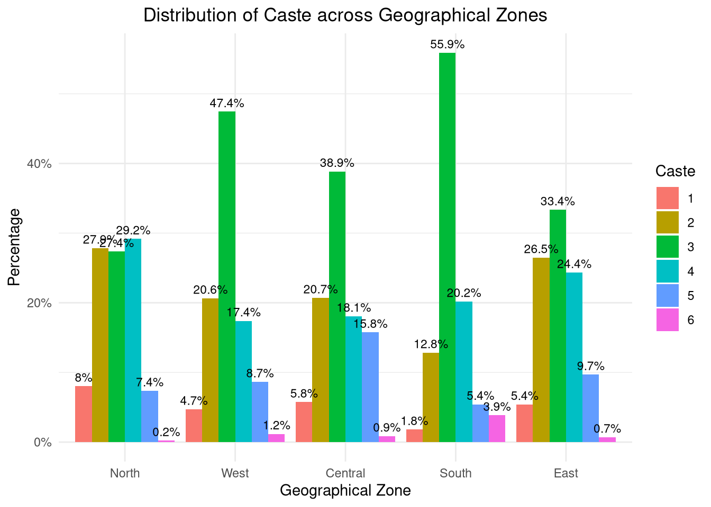
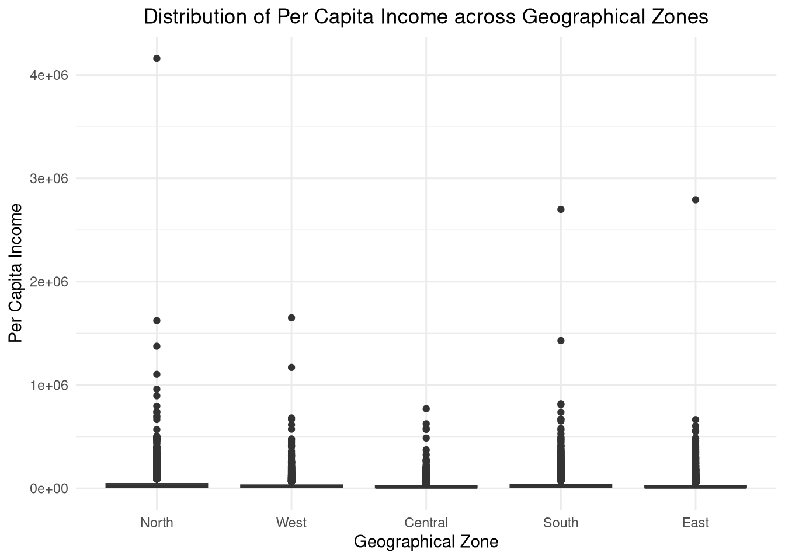

rm(list = ls())Assessment 3
DDD 2: Introduction to Programming and Basic Data Analysis
Setup
Load Required Libraries
# Library loading
library(tibble)
library(dplyr)
library(rlang)
library(lobstr)
library(rio)
library(ggplot2)
library(purrr)
library(labelled)
library(stargazer)
library(scales)
library(janitor)
library(flextable)IHDS Data exercise
library(tidyverse)
library(rio)
HH_DATA <- import("../data/ddd2/RAW_DATA/ICPSR_36151/HH_DATA/HH_DATA.dta")
IHDS<- subset(HH_DATA, select= c(ID18C, ID13, URBAN2011))
view(IHDS)Assessment Environment
#All assessment answers and variables stored here in this environment
assessment_3 <- new.env()Question 1: Data Cleaning and Visualization
Step 1
assessment_3$raw_data <- import("../data/ddd2/RAW_DATA/ICPSR_36151/HH_DATA/HH_DATA.dta")Step 2
# STEP 2: Select required variables
library(tidyverse)
assessment_3$df <- assessment_3$raw_data |>
select(ID11, ID13, STATEID, INCOMEPC) |>
rename(
region = ID11,
caste = ID13,
state_id = STATEID,
income_pc = INCOMEPC)|> filter(!is.na(state_id))Step 3 : Create new variable for geographical zones
assessment_3$df <- assessment_3$df |>
mutate(
geo_zone = case_when(
state_id %in% c(2, 3, 6, 7, 12, 5, 22) ~ "North",
state_id %in% c(8, 24) ~ "West",
state_id %in% c(18, 23) ~ "Central",
state_id %in% c(29, 33, 36, 28, 32) ~ "South",
state_id %in% c(19, 10, 20, 21, 4) ~ "East",
TRUE ~ NA_character_))Step 4 : Clean data by removing rows with missing values in key variables
assessment_3$df_clean <- assessment_3$df |>
filter(!is.na(geo_zone), !is.na(caste), !is.na(income_pc))Step 5 : Contingency table - Caste vs Zones
assessment_3$df_clean |>
mutate(across(c(caste, geo_zone), as.factor)) |>
tabyl(geo_zone, caste) |>
adorn_percentages("row") |>
adorn_pct_formatting() |>
janitor::adorn_ns() |>
flextable() geo_zone | 1 | 2 | 3 | 4 | 5 | 6 |
|---|---|---|---|---|---|---|
Central | 5.8% (236) | 20.7% (849) | 38.9% (1,593) | 18.1% (741) | 15.8% (646) | 0.9% (35) |
East | 5.4% (377) | 26.5% (1,848) | 33.4% (2,327) | 24.4% (1,699) | 9.7% (676) | 0.7% (50) |
North | 8.0% (628) | 27.9% (2,181) | 27.4% (2,142) | 29.2% (2,285) | 7.4% (577) | 0.2% (17) |
South | 1.8% (174) | 12.8% (1,232) | 55.9% (5,366) | 20.2% (1,940) | 5.4% (521) | 3.9% (370) |
West | 4.7% (216) | 20.6% (949) | 47.4% (2,181) | 17.4% (800) | 8.7% (398) | 1.2% (54) |
#Step 6 : Summary statistics of income by zone
assessment_3$df_clean |>
group_by(geo_zone) |>
summarise(
n = n(),
mean_income = mean(income_pc, na.rm = TRUE),
min_income = min(income_pc, na.rm = TRUE),
max_income = max(income_pc, na.rm = TRUE))# A tibble: 5 × 5
geo_zone n mean_income min_income max_income
<chr> <int> <dbl> <dbl> <dbl>
1 Central 4100 21229. -19800 770333.
2 East 6977 23900. -22726. 2792455
3 North 7830 39457. -45366. 4161000
4 South 9603 31070. -289008. 2698850
5 West 4598 28324. -259260 1650000 PLOT 1: Caste distribution across zones
assessment_3$df_clean |>
filter(!is.na(caste), !is.na(geo_zone)) |>
count(geo_zone, caste) |>
group_by(geo_zone) |> # <-- important fix
mutate(prop = n / sum(n),top_lab = paste0(round(prop * 100, 1), "%")) |>
ungroup() |>
ggplot(aes(
x = factor(geo_zone, levels = c("North", "West", "Central", "South", "East")),
y = prop,
fill = factor(caste))) +
geom_col(position = position_dodge(width = 0.9)) +
geom_text(
aes(label = top_lab),
position = position_dodge(width = 0.9),
vjust = -0.5,
size = 3) +
scale_y_continuous(labels = scales::percent) +
labs(
x = "Geographical Zone",
y = "Percentage",
title = "Distribution of Caste across Geographical Zones",
fill = "Caste") +
theme_minimal() +
theme(
plot.title = element_text(hjust = 0.5),
legend.position = "right")
Interpretatiion of the above plot:
The bar plot illustrates the distribution of caste categories across different geographical zones. Each bar represents a zone, and the segments within the bars represent the proportion of each caste category within that zone. The percentages displayed on top of each segment indicate the proportion of that caste category in relation to the total population of the respective zone. From the plot, we can observe that certain zones have a higher concentration of specific caste categories. For instance, the North zone has a higher percentage of General caste, while the South zone has a higher percentage of OBC. The Central and East zones show a more balanced distribution across caste categories. This visualization helps us understand the demographic composition of each geographical zone in terms of caste distribution.
PLOT 2 : plot the Distribution of per capita income across zones
assessment_3$df_clean |>
filter(!is.na(geo_zone), !is.na(income_pc)) |>filter(income_pc>0) |>
ggplot(aes(x = factor(geo_zone, levels = c("North", "West", "Central", "South", "East")), y = income_pc)) +
geom_boxplot() +
labs(
x = "Geographical Zone",
y = "Per Capita Income",
title = "Distribution of Per Capita Income across Geographical Zones"
) +
theme_minimal() +
theme(plot.title = element_text(hjust = 0.5))
Interpretation of the above plot:
The boxplot illustrates the distribution of per capita income across different geographical zones. The median income is represented by the line within each box, while the boxes themselves show the interquartile range (IQR). The whiskers extend to 1.5 times the IQR, and any points beyond that are considered outliers. From the plot, we can observe that the North and South zones have higher median incomes compared to the Central and East zones. Additionally, the West zone shows a wider spread of income, indicating greater variability in per capita income within that zone. Outliers are present in all zones, suggesting that there are some households with significantly higher or lower incomes than the majority.
Final Check
ls(assessment_3)[1] "df" "df_clean" "raw_data"